-
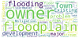
White C. T., Mitasova H., BenDor T. K., Foy K., Pala O., Vukomanovic J., Meentemeyer R. K. 2021.
Spatially Explicit Fuzzy Cognitive Mapping for Participatory Modeling of Stormwater Management.
In: Land.
-
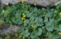
Reckling W., Mitasova H., Wegmann K., Kauffman G., Reid R. 2021.
Efficient Drone-Based Rare Plant Monitoring Using a Species Distribution Model and AI-Based Object Detection.
In: Drones.
-
 Gaydos D., Jones C. M., Jones S. K., Garrett M. C., Petras V., Petrasova A., Mitasova H., Meentemeyer R. K. 2021.
Evaluating online and tangible interfaces for engaging stakeholders in forecasting and control of biological invasions.
In: Ecological Applications.
Gaydos D., Jones C. M., Jones S. K., Garrett M. C., Petras V., Petrasova A., Mitasova H., Meentemeyer R. K. 2021.
Evaluating online and tangible interfaces for engaging stakeholders in forecasting and control of biological invasions.
In: Ecological Applications.
-
Petras V., Mitasova H., Petrasova, A. 2021.
Open Source Software Development.
In: The Geographic Information Science & Technology Body of Knowledge (2nd Quarter 2021 Edition), John P. Wilson (ed.).
-
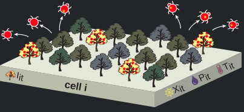
Jones C. M., Jones S., Petrasova A., Petras V., Gaydos D., Skrip M. M., Takeuchi Y., Bigsby K., Meentemeyer R. K. 2021.
Iteratively forecasting biological invasions with PoPS and a little help from our friends.
In: Frontiers in Ecology and the Environment.
-
Millar G. C., Mitas O., Boode W., Hoeke L., de Kruij J., Petrasova A., Mitasova H. 2021.
Space-time analytics of human physiology for urban planning.
In: Computers, Environment and Urban Systems, 85.
-
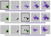
Petrasova A., Gaydos D. A., Petras V., Jones C. M., Mitasova H., Meentemeyer R. K. 2020.
Geospatial simulation steering for adaptive management.
In: Environmental Modelling & Software, 133.
-
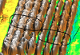
Montgomery K., Henry J. B., Vann M. C., Whipker B. E., Huseth A. S., Mitasova H. 2020.
Measures of Canopy Structure from Low-Cost UAS for Monitoring Crop Nutrient Status.
In: Drones 4(3).
-
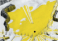
Tabrizian P., Petrasova A., Baran P. K., Vukomanovic J., Mitasova H., Meentemeyer R. K. 2020.
High Resolution Viewscape Modeling Evaluated Through Immersive Virtual Environments.
In: ISPRS Int. J. Geo-Inf, 9(7).
-
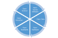
Coetzee S., Ivanova I., Mitasova H., Brovelli M. A. 2020.
Open Geospatial Software and Data: A Review of theCurrent State and A Perspective into the Future.
In: ISPRS Int. J. Geo-Inf, 9(2).
-
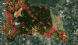
White C., Petrasova A., Reckling W., Mitasova, H. 2020,
Automated land cover change detection through rapid UAS updates of digital surface models.
In: ISPRS Archives, Volume XLII-3/W11.
-
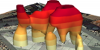
Petrasova A., Hipp J. A., Mitasova H. 2019.
Visualization of Pedestrian Density Dynamics Using Data Extracted from Public Webcams.
In: ISPRS Int. J. Geo-Inf, 8(12).
-
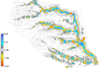
Harmon B., Mitasova H., Petrasova A., Petras V. 2019.
r.sim.terrain 1.0: a landscape evolution model with dynamic hydrology.
In: Geoscientific Model Development, 12(7).
-
 Millar G., Tabrizian P., Petrasova A., Petras V., Harmon B., Mitasova H., Meetenmeyer R. 2018.
Tangible Landscape: A Hands-on Method for Teaching Terrain Analysis.
ACM CHI 2018, Montréal, Canada. (presentation)
Millar G., Tabrizian P., Petrasova A., Petras V., Harmon B., Mitasova H., Meetenmeyer R. 2018.
Tangible Landscape: A Hands-on Method for Teaching Terrain Analysis.
ACM CHI 2018, Montréal, Canada. (presentation)
-
 Harmon B., Petrasova A., Petras V., Mitasova H., Meentemeyer R. 2017.
Tangible topographic modeling for landscape architects.
International Journal of Architectural Computing.
Harmon B., Petrasova A., Petras V., Mitasova H., Meentemeyer R. 2017.
Tangible topographic modeling for landscape architects.
International Journal of Architectural Computing.
-

Tabrizian, P., Harmon, B., Petrasova, A., Petras, V., Mitasova, H., Meentemeyer, R. 2017.
Tangible Immersion for Ecological Design.
Association for Computer Aided Design in Architecture (ACADIA), at Cambridge, MA.
-

Petras V., Newcomb D. J., Mitasova H, 2017.
Generalized 3D fragmentation index derived from lidar point clouds.
In: Open Geospatial Data, Software and Standards.
-

Petrasova, A., Mitasova, H., Petras, V., Jeziorska, J. 2017.
Fusion of high-resolution DEMs for water flow modeling. In: Open Geospatial Data, Software and Standards.
-

Tonini, F. Shoemaker, D., Petrasova, A., Harmon, B. A., Petras, V., Cobb, R. C., Mitasova, H., and Meentemeyer, R. K., 2017.
Tangible geospatial modeling for collaborative solutions to invasive species management. In: Environmental Modelling & Software.
-

Tabrizian, P., Petrasova, A., Harmon, B. A., Petras, V., Mitasova, H., and Meentemeyer, R. K., 2016.
Immersive Tangible Geospatial Modeling (demo paper). Proceedings of ACM SIGSPATIAL 2016, Burlingame, CA, USA.
-
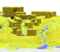
Harmon, B. A., Petrasova, A., Petras, V., and Mitasova, H., 2016,
Computational Landscape Architecture:
Procedural, Tangible, and Open Landscapes.
In: J. R. Anderson & D. Ortega (Eds.),
Innovations in Landscape Architecture. Routledge.
-

Jeziorska, J; Mitasova, H; Petrasova, A; Petras, V; Divakaran, D; Zajkowski, T., 2016,
Overland flow analysis using time series of sUAS-derived elevation models,
ISPRS Annals.
-

Petras, V., Mitasova, H., Petrasova, A., 2015.
Mapping gradient fields of landform migration.
In: Jaroslaw, J., Zwolinski, Z., Mitasova, H., Hengl, T.
Geomorphometry for Geosciences.
Bogucki Wydawnictwo Naukowe, Adam Mickiewicz University in Poznan
– Institute of Geoecology and Geoinformation.
Poznan, Poland.
ISBN: 978-83-7986-059-3
-

Petras, V., Petrasova, A., Harmon, B., Meentemeyer, R.K., Mitasova, H.
Integrating Free and Open Source Solutions into Geospatial Science Education.
ISPRS International Journal of Geo-Information. 2015, 4, 942-956.
doi:10.3390/ijgi4020942
-
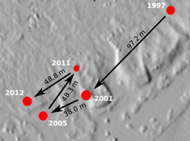
Paris, P., and Mitasova, H., 2014, Barrier Island Dynamics using Mass Center Analysis-A new way to detect
and track large-scale change. ISPRS Int. Journal of Geo-Information 3(1), p.49-65.
-
Petrasova, A., Harmon, B., Petras, V., Mitasova, H., 2014.
GIS-based environmental modeling with tangible interaction and dynamic visualization.
In: Ames, D.P., Quinn, N.W.T., Rizzoli, A.E. (Eds.),
Proceedings of the 7th International Congress on Environmental Modelling and Software,
June 15-19, San Diego, California, USA. ISBN: 978-88-9035-744-2
-
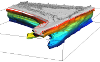
Tateosian L., Mitasova, H., Thakur S., Hardin E., Russ E., Bundell B. 2014,
Visualizations of Coastal Terrain Time-series, Information Visualization, 13(3), pp. 266-282. DOI: 10.1177/1473871613487086
-
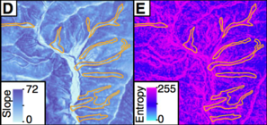
Lyons, N.J., Mitasova, H., Wegmann K.W., 2013,
Improving mass-wasting inventories of debris flow-dominated channels in non-glaciated terrains,
Landslides, 11(3) pp. 385-397, DOI 10.1007/s10346-013-0398-0
-
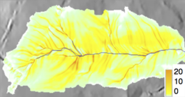
Mitasova H., Hofierka, J., Harmon R.S., Barton M.C., Ullah, I., 2013, GIS-based Soil Erosion Modeling,
In: Shroder, J. (Editor in Chief), Bishop, M.P. (Ed.), Treatise on Geomorphology. Academic Press, San Diego, CA, vol. 3,
Remote Sensing and GIScience in Geomorphology, pp. 228–258.
-
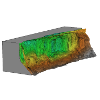
Starek, M.J., Mitasova H., Wegmann, K, Lyons, N., 2013,
Space-Time Cube Representation of Stream Bank Evolution Mapped by Terrestrial Laser Scanning,
IEEE Geoscience and Remote Sensing Letters PP(99), DOI 10.1109/LGRS.2013.2241730
-
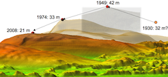
Mitas, O., Mitasova, H.; Brothers, G., Weaver, K., 2013, Managing Dune Landscape Changes
at Jockey's Ridge State Park, North Carolina, Tourism in Marine Environments 9(3-4), pp. 155-167.
-
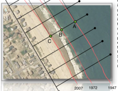
Paris P.J., Hardin E., Mitasova H., Starek M.J., Kurum O.M., Overton M.F., 2013,
Lines in the Sand: Geomorphic and Geospatial Characterization and Interpretation of Sandy Shorelines and Beaches,
Geography Compass 7(5), p. 315-343.
-
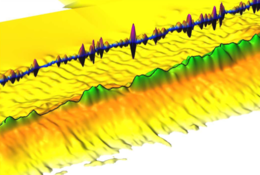
Thakur S, Tateosian L., Mitasova, H and Hardin E. 2013,
Summary Visualizations for Coastal Spatial-Temporal Dynamics,
Int. Journal for Uncertainty Quantification 3(3), p. 241-253.
-
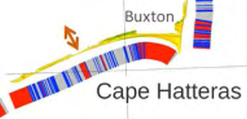
Mitasova, H., Overton, M.F., Oliver, R., and Hardin, E., 2012,
Ocean shoreline migration, In: 2012 Albemarle-Pamlico Ecosystem Assessment,
Ed. D.E. Carpenter and L. Dubbs, APNEP, Raleigh NC, p. 138-143.
-
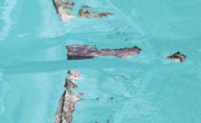
Clinch, A.S., Russ, E.,Oliver, R.C., Mitasova H., and Overton, M.F. 2012,
Remote sensing estimation of Hurricane Irene soundside surge elevations on the North Carolina Outer Banks,
Shore and Beach 80, p. 1-10.
-
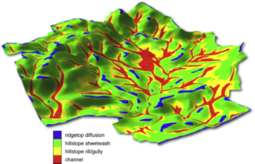
Barton, M.C., Ullah, I.T., Bergin, S.M., Mitasova, H., Sarjoughian, H., 2012,
Looking for the Future in the Past: Long-Term Change in Socioecological Systems,
Ecological Modelling 241, p. 42-53. http://dx.doi.org/10.1016/j.ecolmodel.2012.02.010
-

Hardin E., Kurum O., Mitasova H., Overton MF, 2012,
Least cost path extraction of topographic features for storm impact scale mapping,
Journal of Coastal Research 28(4), p. 970-978.
-
Mitas, O., Mitasova, H., Brothers G., Weaver K., 2012,
Managing change at dune landscape, Proc. 7th Int. Coastal and Marine Tourism Congress,
Ed. D. Korteweg Maris, NRIT Media and NHTV Breda, Netherlands, pp. 61-74.
-
Mitasova H., Harmon R.S., Weaver K.J., Lyons, N.J. and Overton, M.F., 2012,
Scientific visualization of landscapes and landforms,
Geomorphology 137(1), p. 122-137. (doi: 10.1016/j.geomorph.2010.09.033)
-
Alvarez J., Mitasova H., Allen H.L., 2011,
Estimating monthly solar radiation in South-Central Chile, Chilean Journal of Agricultural Research 71(4), 601-609.
-
Starek, M.J., Mitasova H., Hardin, E., Overton, M.F., Harmon, R.S., 2011,
Modeling and analysis of landscape evolution using airborne, terrestrial, and laboratory laser scanning,
Geosphere, 7(6), p. 1340–1356.
-
Mitasova H., Hardin E., Starek, M.J., Harmon R.S,. and Overton, M.F, 2011,
Landscape dynamics from LiDAR data time series,
In: Geomorphometry 2011, Hengl, T., Evans, I.S., Wilson, J.P., Gould, M. (eds.), Redlands, CA, p. 3-6.
-
Jolma, A., Ames, D.P., Horning, N., Mitasova, H., Neteler, M., Racicot, A. and Sutton, T. 2011,
Environmental Modeling and Management using Free and Open Source Geospatial Tools.
In: Kresse, W. and Danko D.M. (eds.) Handbook of Geographic Information, Springer.
-
Metz M., Mitasova H., and Harmon R.S., 2011,
Efficient extraction of drainage networks from massive, radar-based elevation models with least cost path search,
Hydrology and Earth System Sciences, 15, 667-678, 2011 doi:10.5194/hess-15-667-2011r
-
Tateosian, L.G., Mitasova, H., Fogleman, B., Harmon, B., Weaver K., and Harmon R.S., 2010,
TanGeoMS: Tangible geospatial modeling system,
IEEE Transactions on Visualization and Computer Graphics (TVCG), 16(6), p. 1605-1612.
doi:http://doi.ieeecomputersociety.org/10.1109/TVCG.2010.202
[video]
-
Mitasova H., Hardin E., Kurum, M.O., Overton M.F., 2010,
Geospatial analysis of vulnerable beach-foredune systems from decadal time series of lidar data,
Journal of Costal Conservation, Management and Planning, 14(3), p.161-172. DOI 10.1007/s11852-010-0088-1 [pdf]
-
Barton, M.C., Ullah, I., and Mitasova, H., 2009,
Computational modeling and socioecological dynamics in the neolythic of SW Asia,
American Antiquity, 75(2), pp. 364-386.
-
Harmon, R.S., Lyons, W.B., Long, D.T., Ogden, F.L., Mitasova, H., Gardner, C.B., Kathleen A. Welch, and Rebecca A. Witherow, 2009,
Geochemistry of Four Tropical Montane Watersheds, Central Panama, Applied Geochemistry 24, p. 624-640.
-
Mitasova, H., Overton, M., Recalde, J.J., Bernstein, D., and Freeman C., 2009,
Raster-based Analysis of Coastal Terrain Dynamics from Multitemporal Lidar Data,
Journal of Coastal Research 25(2), p. 507-514, DOI: 10.2112/07-0976.1.
-
Jolma, A., Ames, D.P., Horning, N., Mitasova, H., Neteler, M., Racicot, A. and Sutton, T. 2008,
Free and open source geospatial tools for environmental modelling and management.
In: Jakeman, A.J., Voinov, A.A., Rizzoli, A.E. and Chen, S.H. (eds.) Environmental Modelling,
Software and Decision Support. State of the Art and New Perspectives.
Developments in Integrated Environmental Assessment Vol. 3: 163-180.
-
Neteler, M. and Mitasova, H., 2008, Open Source GIS: A GRASS GIS Approach.
Third Edition. The International Series in Engineering and Computer Science: Volume 773. Springer New York Inc, p. 406.
-
Hofierka, J., Mitasova, H., Neteler, M., 2008. Geomorphometry in GRASS GIS.
In: Hengl, T. and Reuter, H.I. (Eds), Geomorphometry: Geomorphometry: Concepts, Software, Applications.
Developments in Soil Science, vol. 33, Elsevier, 387-410 pp.
-
Mitasova, H., Mitas, L., Ratti, C., Ishii, H., Alonso J., and Harmon, R.S., 2006,
Real-time Human Interaction With Landscape Models Using a Tangible Geospatial Modeling Environment,
IEEE Computer Graphics & Applications, Special Issue - GeoVisualization, 26(4), pp 55-63.[pdf]
-
Mitasova, H., Overton, M., Harmon, R.S., 2005,
Geospatial analysis of a coastal sand dune field evolution: Jockey's Ridge, North Carolina,
Geomorphology 72, pp 204-221.[pdf]
-
H.Mitasova, H., Mitas, L. and Harmon, R.S., 2005,
Simultaneous spline interpolation and topographic analysis for lidar elevation data: methods for Open source GIS,
IEEE GRSL 2(4), pp. 375- 379.[pdf]
-
Markus Neteler, Helena Mitasova, 2004, Open Source GIS: A GRASS GIS Approach, Second Edition,
Kluwer International Series in Engineering and Computer Science, 773,
Kluwer Academic Press, Boston, Dordrecht, 424 pages. Hardbound and eBook.
-
Mitasova, H and Neteler, M, 2004, GRASS as Open Source - Free Software GIS: accomplishments and perspectives.
Transactions in GIS 8(2), 145-154[pdf]
-
Mitasova, H., Drake, T.G., Harmon, R.S., Bernstein, D. 2004.
Quantifying rapid changes in coastal topography using modern mapping techniques and GIS,
Environmental and Engineering Geoscience, 10(1), 1-11.[pdf]
-
Mitasova, H. and Hofierka, J., 2003, Impact of new mapping technologies on communication of geospatial information.
Kartograficke listy 11, pp. 53-61.
-
Markus Neteler, Helena Mitasova, 2002, Open Source GIS: A GRASS GIS Approach,
Kluwer International Series in Engineering and Computer Science, 689, Kluwer Academic Press, Boston, Dordrecht, 464 pages.
-
Mitasova, H.,Mitas, L., Brown, W.M., 2002, Multiscale simulation of land use impact on soil erosion and deposition patterns.
In: D.E. Stott, R.H. Mohtar and G.C. Steinhart (eds) Sustaining the Global Farm.
Selected papers from the 10th ISCO Meeting held May 24-29, 1999 at Purdue University and the USDA-ARS NSERL, 1163-1169.
-
Mitas, L., Mitasova, H., 2002,
Multiscale Green's function Monte Carlo approach to erosion modelling and its application to land use optimization.
In: W. Summer and D.E. Walling (eds), Modelling erosion, sediment transport and sediment yield.
International Hydrological Programme VI, UNESCO, Paris, 69-87.
-
Hofierka J., Parajka J., Mitasova H., Mitas L., 2002, Multivariate Interpolation of Precipitation Using Regularized Spline with Tension.
Transactions in GIS, Vol 6(2), 135-150.[pdf]
-
Mitasova, H., Mitas, L., 2002, Modeling Physical Systems,
In: Geographic Information Systems and Environmental Modeling, Parks B., Crane M. and Clarke, K eds.,
Prentice Hall, 189-210. draft version
-
Mitasova, H., Mitas, L., 2001, Multiscale soil erosion simulations for land use management,
In: Landscape erosion and landscape evolution modeling, Harmon R. and Doe W. eds., Kluwer Academic/Plenum Publishers, pp. 321-347.
-
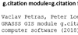
Loewe P., Petras V., Neteler M., Mitasova H. 2019.
Enabling Fine-Grained Scientific Citation for GRASS GIS Software Modules.
In: Preprints.
-
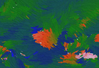
Tateosian, L., Amindarbari, R., Healey, C., Kozik, P., and Enns, J.,
The Utility of Beautiful Visualizations,
Volume 17 (2017) FOSS4G 2017 Full Conference Proceedings, Boston, USA.
-
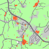
Petrasova, A., Petras, V., Van Berkel, D., Harmon, B. A., Mitasova, H., and Meentemeyer, R. K., 2016.
Open source approach to urban growth simulation.
Int. Arch. Photogramm. Remote Sens. Spatial Inf. Sci., XLI-B7, 953-959. DOI: 10.5194/isprsarchives-XLI-B7-953-2016
-
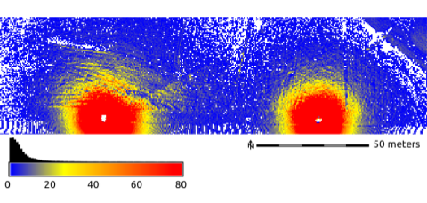
Petras, V; Petrasova, A; Jeziorska, J; Mitasova, H, 2016,
Processing UAV and lidar point clouds in GRASS GIS,
Int. Arch. Photogramm. Remote Sens. Spatial Inf. Sci. DOI: 10.5194/isprsarchives-XLI-B7-945-2016
-

Harmon BA, Petrasova A, Petras V, Mitasova H, Meentemeyer RK, 2016,
Tangible Landscape: Cognitively grasping the flow of water
Int. Arch. Photogramm. Remote Sens. Spatial Inf. Sci. DOI: 10.5194/isprsarchives-XLI-B2-647-2016
-

Petrasova, A., Petras, V., Shoemaker, D. A., Dorning, M. A., and Meentemeyer, R. K., 2015,
The integration of land change modeling framework FUTURES into GRASS GIS 7,
Geomatics Workbooks n° 12 - FOSS4G Europe: Como 2015.
-
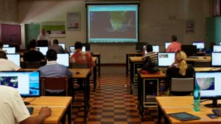
Mitasova, H., Schweik, C.M, 2013, Building a Global Network: Open Source Geospatial Education and Research,
GIM International, August 2013, p. 25-29.
-
Brovelli, M, Mitasova, H, Neteler, M, Raghavan, V, 2012,
Free and open source desktop and Web GIS solutions, Applied Geomatics 4(2), 65-66
-
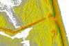
Hardin, E., Kurum, O., Mitasova, H., Overton, M.F., 2012,
GIS-based approach to analysis of storm vulnerability change at Pea Island, NC, new breach location,
Proceedings of the 33rd International Conference on Coastal Engineering (ICCE 2012), Santander, Spain.
-
Kurum, O., Overton, M.F., Mitasova, H., 2012,
The influence of antecedent topographic conditions and geologic layers on post-storm coastal morphology,
Proceedings of the 33rd International Conference on Coastal Engineering (ICCE 2012), Santander, Spain.
-
Starek, M.J., Mitasova H., Harmon, R.S., 2011,
Fort Fisher, NC Past and Present: A Geospatial Analysis using LiDAR and GIS,
Proc. 9th International Military Geosciences Conference.
-
Hardin, E., Mitasova, H.., Overton, M.F., 2011,
Quantification and characterization of terrain evolution on the Outer banks, NC,
Proc. Coastal Sediments 2011, Miami, p.739-753.
-
Kurum, O., Mitasova, H., Overton, M.F., 2011,
Geospatial techniques to derive short term dynamics of coastal morphology,
Proc. Coastal Sediments 2011, Miami.
-
Kurum O., Kumar, M., Overton M.F., Mitasova H., Edge W., 2010,
Effects of coastal landform change on storm surge along the Hatteras island breach area,
32nd International Conference on Coastal Engineering (ICCE 2010) Shanghai, China.
-
Metz M., Mitasova H., and Harmon R.S., 2009,
Fast stream extraction from large, radar-based elevation models with variable level of detail,
In: Geomorphometry 2009 Conference Proceedings, Edited by R. Purves, S. Gruber, R. Straumann and T. Hengl. University of Zurich, Zurich, 2009.
-
Mitasova, H., Hardin, E., Overton, M., and Harmon, R.S., 2009,
New spatial measures of terrain dynamics derived from time series of lidar data,
Proc. 17th Int. Conf. Geoinformatics, Fairfax, VA. [pdf]
DOI10.1109/GEOINFORMATICS.2009.5293539 animation illustrating core and envelope surfaces
-
Overton, M., Mitasova H., Recalde, J.J., 2008,
Geospatial time series analysis of volumetric change,
Proceedings of ICCE 2008 meeting, Hamburg, Germany. [pdf]
-
Mitasova, H., Neteler, M., Mitas, L. and Harmon, R.S., 2007,
Environmental Data Management, Analysis and Modeling in GRASS6.
Proc. ISESS Prague 2007 [pdf]
-
Jolma, A., D.P. Ames, N. Horning, H. Mitasova, M. Neteler, A. Racicot, and T. Sutton, 2007,
Environmental Modeling and Management using Free and Open Source Geospatial Tools,
In: Encyclopedia of GIS, Springer, in press.
-
Mitasova, H., 2007, Interpolation,
In: Encyclopedia of Geographic Information Science, edited by Kemp, K., Sage Publications Inc., in press.
-
Overton, M., Mitasova H., Recalde, J.J. and Vanderbeke, N., 2006,
Morphological evolution of a shoreline on a decadal time scale, Proceedings of ICCE 2006 meeting.[pdf]
-
Barton, M., Hessam Sarjoughian, Falconer, S., Mitasova, H., Arrowsmith, R. and Fall, P., 2006,
Modeling Long-Term Landscape Dynamics and the Emergence of Intensification,
Proc. Society for American Archaeology 70th Annual Meeting.
-
Colson, T.P., Gregory, J.D., Mitasova, H. , Nelson S.A.C., 2006,
Comparison of stream extraction models using lidar DEMs,
Proc. GIS and Water Resources IV, AWRA, Houston, TX, May, 2006.[pdf]
-
Mitasova, H., Bernstein, D., Harmon, R.S., Hofierka, J., McLaughlin, R., 2005,
Monitoring and modeling natural and anthropogenic terrain change: Spatial analysis and simulations of impact on landscape processes.
Proceedings of GISPlanet, Estoril, Portugal, May-June 2005.[pdf]
-
Mitasova, H., Overton, M.F., Bernstein, D., Harmon, R.S., 2004,
Assessing coastal hazards using recent 3d evolution of beach geomorphology based on lidar and rtk-gps surveys.
Proceedings of the International Conference for Coastal Engineering, Lisbon, Portugal, September 2004.
-
Mitasova, H., Thaxton, C., Hofierka, J., McLaughlin, R., Moore, A., Mitas L., 2005,
Path sampling method for modeling overland water flow, sediment transport and short term terrain evolution in Open Source GIS.
In: C.T. Miller, M.W. Farthing, V.G. Gray, G.F. Pinder eds., Proceedings of the XVth International Conference
on Computational Methods in Water Resources (CMWR XV), June 13-17 2004, Chapel Hill, NC, USA, Elsevier, pp. 1479-1490. [pdf]
-
Kinner D., Mitasova, H. Harmon, R. Toma, L., Stallard R., 2005,
GIS-based Stream Network Analysis for The Chagres River Basin, Republic of Panama.
In: The Rio Chagres: A Multidisciplinary Profile of a Tropical Watershed, R. Harmon (Ed.), Springer/Kluwer, p.83-95. [pdf]
-
Freeman, Ch., Bernstein, D.J., and Mitasova, H., 2004,
Rapid response 3D survey techniques for seamless topo/bathy modeling: 2003 Hatteras Breach, North Carolina,
Shore and Beach, 72(2), p. 25-30.
-
Thaxton, C., Mitasova, H., Mitas L., and McLaughlin, R., 2004,
Simulations of distributed watershed erosion, deposition and terrain evolution using a path sampling Monte Carlo method.
Proceeding for the ASAE/CSAE Annual International Meeting, Ottawa, Ontario, Canada, CDROM.
-
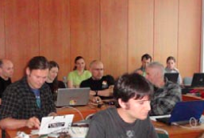
H. Mitasova and M. Neteler. Free General-purpose GIS. A Geographic Resources Analysis Support System.
GIM International, 17(11), 2003, p. 40-43., japanese translation in The Journal of Survey 54(2) February 2004, p. 34-39
-
Mitasova, H., Bernstein, D., Drake, T.G., Harmon, R., and Miller, C.H., 2003,
Spatio-temporal analysis of beach morphology using LIDAR, RTK-GPS and Open source GRASS GIS,
Proceedings of the International Conference on Coastal Sediments 2003.
CD-ROM Published by World Scientific Publishing Corp. and East Meets West Productions, Corpus Christi, Texas, USA. ISBN 981-238-422-7 [pdf]
-
Bernstein, D.J., Jun-Yong Park, Forte, M.F., Gayes, P.T., Freeman, Ch., and Mitasova, H., 2003,
Spatial Survey Design Analysis for 3D Mapping of Beach and Shoreface Morphology.
Proceedings of the International Conference on Coastal Sediments 2003.
CD-ROM Published by World Scientific Publishing Corp. and East Meets West Productions, Corpus Christi, Texas, USA. ISBN 981-238-422-7
-
Mitasova, H., Drake, T.G., Harmon, R.S. and Hofierka, J.
Spatio-temporal monitoring of evolving topography using LIDAR, RTKS and sonar data.
Proceedings of the "Open Source Free Software GIS - GRASS users conference 2002",
Ciolli M., Zatelli P. Editors, Trento, Italy, 11-13 September 2002.
-
Mitasova, H., Hofierka, J. and Mitas, L.,
GRASS and modeling landscape processes using duality between particles and fields.
Proceedings of the "Open Source Free Software GIS - GRASS users conference 2002",
Ciolli M., Zatelli P. Editors, Trento, Italy, 11-13 September 2002.
-
Neteler, M. and Mitasova, H., Freedom in geoinformation science and software development: A GRASS GIS contribution.
Proceedings of the "Open Source Free Software GIS - GRASS users conference 2002",
Ciolli M., Zatelli P. Editors, Trento, Italy, 11-13 September 2002.
-
Millar, G. C., Money, E. S., Bunds, K. S., Mitasova, H., AGU 2018.
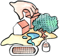
Increasing Underrepresented High School Students' STEM Career Awareness and Interest:
An Informal Geospatial Science Program. AGU Fall Meeting 2018, December 10th-14th, Washington, DC, USA.
(abstract)
-
Mitasova, H., Petrasova, A., Petras, V., Jeziorska, J., Kling, C.
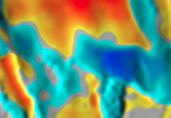
Integration and Analysis of Lidar and UAS Surveys
to Study Coastal Sand Dunes Evolution and Changes in Field Microtopography.
AGU Fall Meeting 2018, December 10th-14th, Washington, DC, USA.
-
Mitasova, H.
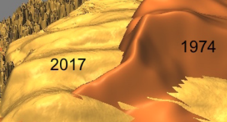
Exploring changing landscapes with dynamic visualizations and tangible interaction.
Texas A&M Corpus Christi 2018.
-
Mitasova, H.
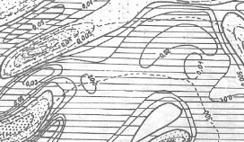
Dynamic Surfaces and Geospatial Processes. Waldo-Tobler Lecture, Austrian Academy of Sciences, Oct 3rd, 2018, Vienna.
-
Millar G. C., Tabrizian P., Petrasova A., Petras V., Harmon B., Mitasova H., Meetenmeyer R. 2018.
 Hands-on Methods for Teaching Landscape Form and Processes.
US-IALE Meeting 2018, April 9th-12th, Chicago, IL, USA.
Hands-on Methods for Teaching Landscape Form and Processes.
US-IALE Meeting 2018, April 9th-12th, Chicago, IL, USA.
-
Petras, V., Mitasova, M., Petrasova, A., Tabrizian, P.
 Open source at NCSU Center for Geospatial Analytics.
North Carolina State University, first presented in November 2017.
Open source at NCSU Center for Geospatial Analytics.
North Carolina State University, first presented in November 2017.
-
Petrasova A., Hipp J. A., Mitasova H.
 Visualization and analysis of active transportation patterns derived from public webcams.
FOSS4G 2017 - Boston, August 2017.
Visualization and analysis of active transportation patterns derived from public webcams.
FOSS4G 2017 - Boston, August 2017.
-
Tabrizian P., Mitasova H.
 Using open-source tools and high-resolution geospatial data to estimate landscapes’ visual attributes.
FOSS4G 2017 - Boston, August 2017.
Using open-source tools and high-resolution geospatial data to estimate landscapes’ visual attributes.
FOSS4G 2017 - Boston, August 2017.
-
Mitasova H., Petras V., Petrasova A.
State of GeoForAll: OSGeo global education and research outreach.
FOSS4G 2017 - Boston, August 2017.
-
Petras V., Neteler M., Petrasova A., Mitasova H.
 Advanced geospatial technologies: The new powerful GRASS GIS 7.2 release.
FOSS4G 2017 - Boston, August 2017.
Advanced geospatial technologies: The new powerful GRASS GIS 7.2 release.
FOSS4G 2017 - Boston, August 2017.
-
Tabrizian P., Petrasova A., Harmon B., Petras V., Mitasova H.
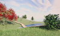
Immersive Tangible Modeling with Geospatial Data.
FOSS4G 2017 - Boston, August 2017.
-
Petrasova A., Hipp J. A., Mitasova H.
 Using space-time cube for visualization and analysis of active
transportation patterns derived from public webcams.
ICC 2017 - Washington DC, July 2017.
PDF version
Using space-time cube for visualization and analysis of active
transportation patterns derived from public webcams.
ICC 2017 - Washington DC, July 2017.
PDF version
-
Petras V.
 How to make your research reproducible.
US-IALE, Baltimore, April 9-13, 2017.
How to make your research reproducible.
US-IALE, Baltimore, April 9-13, 2017.
-
Petras V., Petrasova A., Mitasova H.
3D rasters are powerful and you already know how to use them.
US-IALE, Baltimore, April 9-13, 2017.
-
Petrasova, A., Mitasova, H., Petras, V., Jeziorska, J.
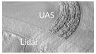
Seamless Fusion Of High-Resolution DEMs From Multiple Sources.
NCGIS 2017 in Raleigh, NC, February 24th. [Recorded presentation]
-

Petras V.
33 years of GRASS GIS as an innovation platform.
NCGIS 2017 in Raleigh, NC, February 23rd. [Recorded presentation]
-
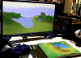
Tabrizian, P., Petrasova, A., Harmon, B., Petras, V., Mitasova, H.
Immersive Tangible Landscape.
NCGIS 2017 in Raleigh, NC, February 23rd. [Recorded presentation]
-
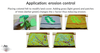
Mitasova, H., Petrasova, A., Harmon, B., Petras, V., Tabrizian, P., Meentemeyer, R.
Tangible Landscape as a tool for modeling and science communication
.
November 16, 2016,
Conservation Biology Institute (CBI) webinar.
[Recorded webinar and additional resources]
-
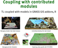
Mitasova, H., Petrasova, A., Petras, V., and Harmon, B.
GRASS GIS as an open source innovation platform: from dynamic visualizations to collaborative tangible modeling
.
September 14 - 16th, AutoCarto 2016.
-

Mitasova, H., Petrasova, A., Harmon, B., Petras, V., Tabrizian, P., Meentemeyer, R.
Tangible Landscape: open source environment for geospatial learning, science, and community
.
August 31, 2016,
GeoForAll, UCGIS, and ASPRS webinar.
Listen to the recorded webinar on YouTube.
-

Petras V., Petrasova A., Jeziorska J., Mitasova H. 2016.
Processing UAV and lidar point clouds in GRASS GIS.
FOSS4G Session at ISPRS 2016 - XXIII ISPRS Congress, Prague, Czech Republic, 12th - 19th July.
-

Petrasova, A., Petras, V., Van Berkel, D., Harmon, B. A., Mitasova, H., and Meentemeyer, R. K., 2016.
Open Source Approach to Urban Growth Simulation.
FOSS4G Session at ISPRS 2016 - XXIII ISPRS Congress, Prague, Czech Republic, 12th - 19th July.
-
Harmon, B., Petrasova, A., Petras, V., Mitasova, H., Meentemeyer, R.
Tangible Landscape
.
May 2-5, 2016, FOSS4G North America 2016, Raleigh, USA.
-
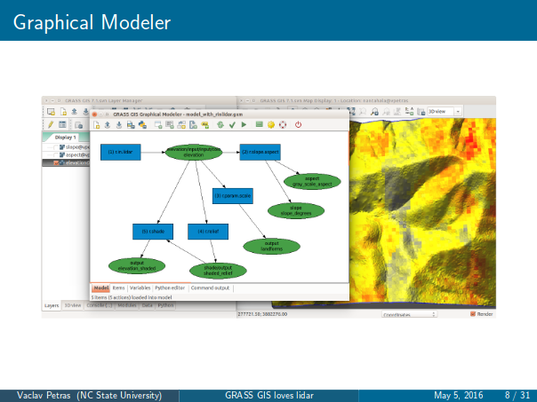
Petras, V., Petrasova, A., Mitasova, H.
GRASS GIS loves lidar
.
May 2-5, 2016, FOSS4G North America 2016, Raleigh, USA.
[other versions]
-
Mitasova, H.
Geo for all — OSGeo education and research outreach:
How it works and how to join
.
May 2-5, 2016, FOSS4G North America 2016, Raleigh, USA.
[video]
-

Petras, V., Newcomb, D., Mitasova, H.
Efficient processing of dense point clouds in GRASS GIS
.
April 3-7, 2016, US-IALE Annual Meeting, Asheville, NC, USA.
[other versions]
-
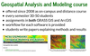
Mitasova, H., Petrasova, A., Petras V., Harmon, B., Meentemeyer R. K.
Integrating FOSS into GIScience Curriculum & Research.
November 11, 2015, UCGIS webinar.
-
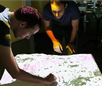
Tonini, F., Shoemaker, D., Petras, V., Petrasova A., Mitasova, H., Meentemeyer, R. K.
Collaborative Simulation of Emerging Infectious Disease Using Tangible Landscape.
The 2015 ESA Annual Meeting.
August 11, 2015, Baltimore, MD USA.
-
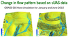
Mitasova, H., Jeziorska, J., Petrasova, A., Petras V., Zajkowski, T.
Flow analysis using sUAS and lidar data.
FOSS4G Europe 2015.
July 17, 2015, Como, Italy.
-
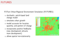
Petrasova, A., Petras V., Shoemaker, D. A., Dorning, M. A., Meentemeyer, R. K.
The integration of land change modeling framework FUTURES in GRASS GIS 7.
FOSS4G Europe 2015.
July 16, 2015, Como, Italy.
-

Petras V., Petrasova, A., Cepero-Perez, K., Neteler, M., Delucchi, L., Landa, M., Mitasova, H.
Using Free and Open Source Solutions in Geospatial Science Education.
FOSS4G Europe 2015.
July 16, 2015, Como, Italy.
-

Petras, V., Mitasova, H., Petrasova, A. (Presented by H. Mitasova.)
Mapping gradient fields of landform migration.
Geomorphometry 2015.
June 24, 2015, Poznan, Poland.
(Associated publication in Geomorphometry for Geosciences)
-
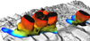
Mitasova, H., Petrasova, A., Petras V., Harmon, B.
3D spatiotemporal analytics and visualization.
Center for Geospatial Analytics, NCSU.
March 26th, 2015, Raleigh, North Carolina, USA.
-
Mitasova, H., Petrasova, A., Petras V., Harmon, B.
Dynamic Landscapes in Open Source GIS.
Coffee & Viz, Teaching and Visualization lab, NCSU Hunt library,
January 23th, 2015, Raleigh, North Carolina, USA.
-
Mitasova, H., Stepinski, T., Jasiewicz, J., Neteler, M., Gebbert, S. AGU 2014.
Analysis of Giga-size Earth Observation Data in Open Source GRASS GIS 7 - from Desktop to On-line Solutions.
AGU Fall Meeting 2014, December 15th-19th, San Francisco, California, USA.
(abstract in program)
-

Petrasova, A., Harmon, B., Mitasova, H., FOSS4G 2014.
GIS-based modeling with tangible interaction.
Video of the talk on Vimeo.
-
Mitasova, H., FOSS4G 2014.
Geo4All: ICA-OSGEO-ISPRS Global network.
-

Petras, V., Petrasova, A., Mitasova, H., FOSS4G 2014.
Spatio-temporal data visualization in GRASS GIS: desktop and web solutions (no link to slides yet).
Web page with selected animations and applications links,
Video of the talk on Vimeo.
-

Petrasova, A., Harmon, B., Petras, V., Mitasova, H., iEMSs 2014.
GIS-based environmental modeling with tangible interaction and dynamic visualization.
PDF version of HTML presentation, for videos look at our
YouTube channel.
-
Mitasova, H.,
Modeling Dynamic landscapes in Open Source GIS, GIS Day 2013,
The University of Kansas, Lawrence KS, November 2013
-
Mitasova, H., Shukunobe, M., Landa, M. and Kratochvilova, A., OGRS 2012,
Building open source geospatial education at research universities.
(PPTX)
Video of the talk on Youtube.


{kind=link}